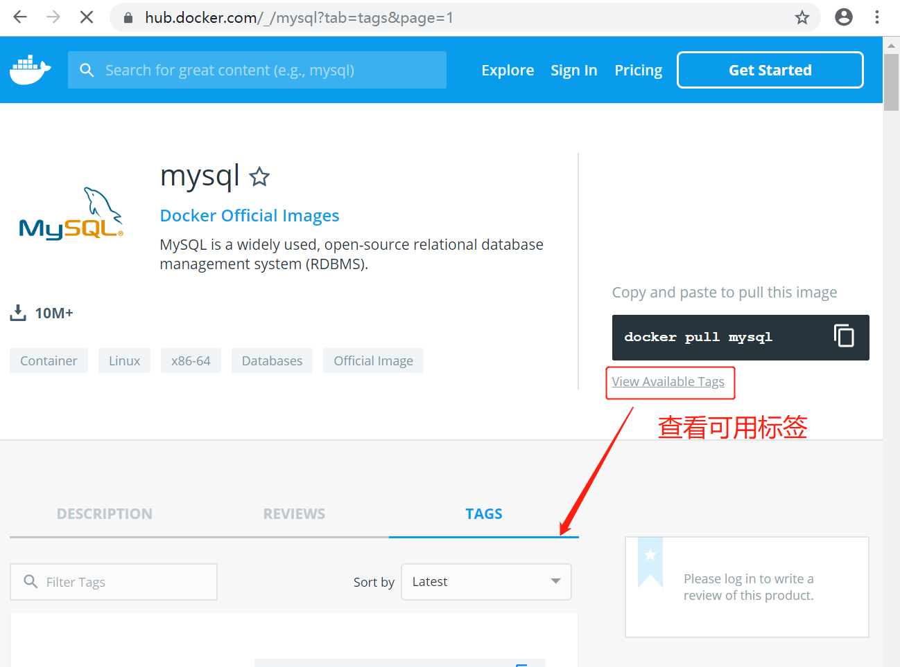
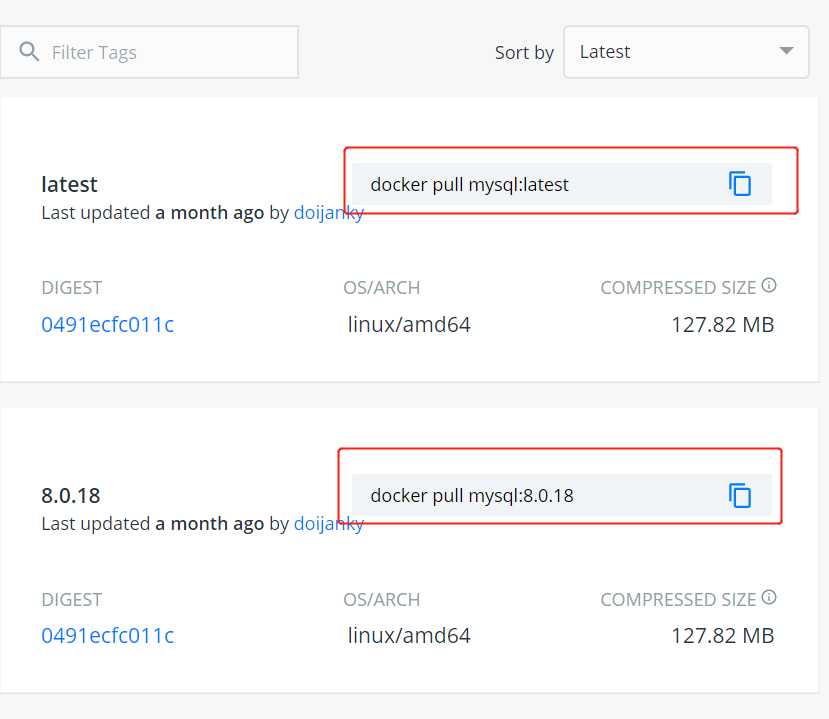

MySQL 是世界上最受欢迎的开源数据库。凭借其可靠性、易用性和性能，MySQL 已成为 Web 应用程序的数据库优先选择。
查看可用的 MySQL 版本
访问 MySQL 镜像库地址：https://hub.docker.com/_/mysql?tab=tags。
可以通过 Sort by 查看其他版本的 MySQL，默认是最新版本 mysql:latest。


还可以用 docker search mysql 命令来查看可用版本：
$ docker search mysql
NAME DESCRIPTION STARS OFFICIAL AUTOMATED
mysql MySQL is a widely used, open-source relation… 9954 [OK]
mariadb MariaDB is a community-developed fork of MyS… 3642 [OK]
mysql/mysql-server Optimized MySQL Server Docker images. Create… 725 [OK]
percona Percona Server is a fork of the MySQL relati… 508 [OK]
centos/mysql-57-centos7 MySQL 5.7 SQL database server 83
mysql/mysql-cluster Experimental MySQL Cluster Docker images. Cr… 75
centurylink/mysql Image containing mysql. Optimized to be link… 61 [OK]
bitnami/mysql Bitnami MySQL Docker Image 44 [OK]
deitch/mysql-backup REPLACED! Please use http://hub.docker.com/r… 41 [OK]
tutum/mysql Base docker image to run a MySQL database se… 35
prom/mysqld-exporter 31 [OK]
schickling/mysql-backup-s3 Backup MySQL to S3 (supports periodic backup… 30 [OK]
databack/mysql-backup Back up mysql databases to... anywhere! 30
linuxserver/mysql A Mysql container, brought to you by LinuxSe… 25
centos/mysql-56-centos7 MySQL 5.6 SQL database server 20
circleci/mysql MySQL is a widely used, open-source relation… 19
mysql/mysql-router MySQL Router provides transparent routing be… 16
arey/mysql-client Run a MySQL client from a docker container 14 [OK]
fradelg/mysql-cron-backup MySQL/MariaDB database backup using cron tas… 8 [OK]
openshift/mysql-55-centos7 DEPRECATED: A Centos7 based MySQL v5.5 image… 6
devilbox/mysql Retagged MySQL, MariaDB and PerconaDB offici… 3
ansibleplaybookbundle/mysql-apb An APB which deploys RHSCL MySQL 2 [OK]
jelastic/mysql An image of the MySQL database server mainta… 1
widdpim/mysql-client Dockerized MySQL Client (5.7) including Curl… 1 [OK]
monasca/mysql-init A minimal decoupled init container for mysql 0
拉取 MySQL 镜像
$ docker pull mysql:latest
latest: Pulling from library/mysql
d121f8d1c412: Already exists
f3cebc0b4691: Pull complete
1862755a0b37: Pull complete
489b44f3dbb4: Pull complete
690874f836db: Pull complete
baa8be383ffb: Pull complete
55356608b4ac: Pull complete
dd35ceccb6eb: Pull complete
429b35712b19: Pull complete
162d8291095c: Pull complete
5e500ef7181b: Pull complete
af7528e958b6: Pull complete
Digest: sha256:e1bfe11693ed2052cb3b4e5fa356c65381129e87e38551c6cd6ec532ebe0e808
Status: Downloaded newer image for mysql:latest
docker.io/library/mysql:latest
查看本地镜像
$ docker images
REPOSITORY TAG IMAGE ID CREATED SIZE
mongo latest 923803327a36 8 hours ago 493MB
redis latest 84c5f6e03bf0 35 hours ago 104MB
mysql latest e1d7dc9731da 47 hours ago 544MB
运行容器
$ docker run -itd --name mysql -p 3306:3306 -e MYSQL_ROOT_PASSWORD=123456 mysql
9dd939121708cf20d98c7596c63190cc27be3ac7c7f6b902cb9beb97aa7b33bd
安装成功
$ docker ps
CONTAINER ID IMAGE COMMAND CREATED STATUS PORTS NAMES
9dd939121708 mysql "docker-entrypoint.s…" 24 seconds ago Up 23 seconds 0.0.0.0:3306->3306/tcp, 33060/tcp mysql
a9386073261a redis "docker-entrypoint.s…" 37 minutes ago Up 37 minutes 0.0.0.0:6379->6379/tcp redis
c36ca6add3c1 mongo "docker-entrypoint.s…" 2 hours ago Up 2 hours 0.0.0.0:22017->22017/tcp, 27017/tcp mongo
通过 root 和密码 123456 访问 MySQL 服务。
$ docker exec -it mysql /bin/bash
root@9dd939121708:/# mysql
ERROR 1045 (28000): Access denied for user 'root'@'localhost' (using password: NO)
root@9dd939121708:/# mysql -h localhost -u root -p
Enter password:
Welcome to the MySQL monitor. Commands end with ; or \g.
Your MySQL connection id is 9
Server version: 8.0.21 MySQL Community Server - GPL
Copyright (c) 2000, 2020, Oracle and/or its affiliates. All rights reserved.
Oracle is a registered trademark of Oracle Corporation and/or its
affiliates. Other names may be trademarks of their respective
owners.
Type 'help;' or '\h' for help. Type '\c' to clear the current input statement.
mysql> show databases;
+--------------------+
| Database |
+--------------------+
| information_schema |
| mysql |
| performance_schema |
| sys |
+--------------------+
4 rows in set (0.01 sec)
mysql>